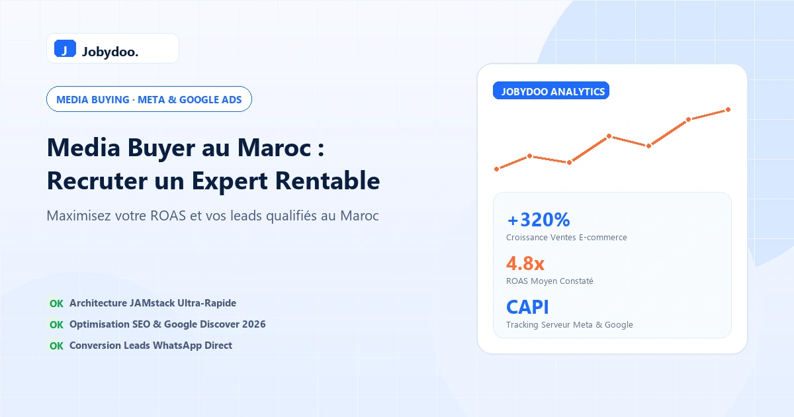

Media Buying & AdsMedia Buyer au Maroc : Guide & Tarif pour Recruter un Expert Ads Rentable
Comment trouver un media buyer d'élite au Maroc ? Rôle, compétences clés, forfaits de gestion et méthode pour rentabiliser vos campagnes Meta, Google & TikTok.